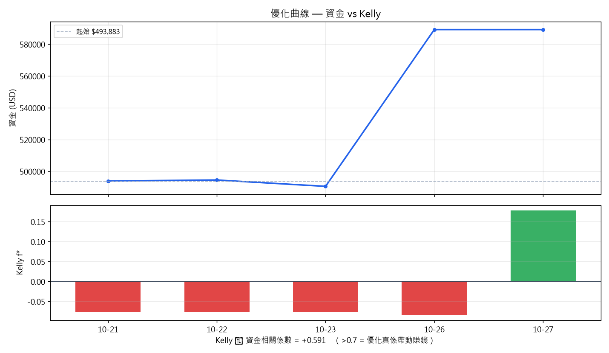

繁體中文版｜骨架蒸餾自 NEL · Market console（逆向工程）｜資料 2026-10-27 08:50
審計日 2026-10-26｜9 個交易日｜233 個 round-trip
| Job | 錢 | 報酬 | 年化 | Kelly | 最佳出場 | 判決 |
|---|---|---|---|---|---|---|
| layer1_layer2 | $+76 | +0.08% | +2% | -0.11 | T+3 收市 | 空中樓閣（Kelly ≤ 0） |
| orh_rvol | $+0 | +0.00% | +0% | — | Jeff Sun 3-stop | 未有交易統計 |
| layer2a_rs | $-901 | -0.90% | -25% | +0.62 | Jeff Sun 3-stop | 蝕錢 |
| champion | $-1,340 | -1.34% | -49% | -0.52 | Jeff Sun 3-stop | 空中樓閣（Kelly ≤ 0） |
| daily_plan | $-1,696 | -1.70% | -38% | -0.06 | Jeff Sun 3-stop | 空中樓閣（Kelly ≤ 0） |
| setup_alerts | $-1,738 | -1.83% | -61% | -0.37 | Jeff Sun 3-stop | 空中樓閣（Kelly ≤ 0） |
| Job | 現行 | Kelly | 最佳 | Kelly | 改善 | 動作 |
|---|---|---|---|---|---|---|
| layer1_layer2 | js3+3日 | +0.06 | hold+3日 | +0.55 | +0.49 | 💡 待批（冇止蝕） |

| Job | 出場 | n | EV | 勝率 | 贏輸比 | Kelly |
|---|---|---|---|---|---|---|
| layer2a_rs | Jeff Sun 3-stop | 13 | +0.66R | 76.9% | 1.58 | +0.62 |
| layer1_layer2 | T+3 收市 | 34 | +0.82R | 76.5% | 1.34 | +0.59 |
| daily_plan | Jeff Sun 3-stop | 24 | -0.07R | 29.2% | 2.01 | -0.06 |
| layer1_layer2 | Jeff Sun 3-stop | 175 | -0.10R | 37.7% | 1.27 | -0.11 |
| setup_alerts | Jeff Sun 3-stop | 14 | -0.46R | 21.4% | 1.34 | -0.37 |
| champion | Jeff Sun 3-stop | 6 | -0.28R | 33.3% | 0.78 | -0.52 |
| orh_rvol | Jeff Sun 3-stop | 1 | -0.26R | 0.0% | 0.00 | -1.00 |
| setup_alerts | T+10 收市 | 11 | -9.91R | 0.0% | 0.00 | -1.00 |
| champion | T+3 收市 | 4 | -0.95R | 25.0% | 0.59 | -1.03 |
| setup_alerts | T+3 收市 | 14 | -2.44R | 35.7% | 0.22 | -2.55 |
| layer2a_rs | T+3 收市 | 2 | -3.26R | 50.0% | 0.09 | -4.79 |
| daily_plan | T+3 收市 | 2 | -11.51R | 50.0% | 0.01 | -40.58 |
python system_audit.py